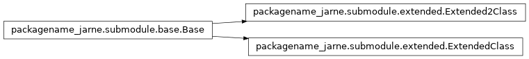

submodule¶
info¶
- packagename_jarne.submodule.info.get_cpu_use()¶
Return CPU usage using psutil
- packagename_jarne.submodule.info.get_gpu_tempfunc()¶
Return GPU temperature as a character string
- packagename_jarne.submodule.info.get_ram_info()¶
Return RAM usage using psutil
- packagename_jarne.submodule.info.get_swap_info()¶
Return swap memory usage using psutil
base¶
Module with the parent classes for the example. Needs to be implemented to use.
Use this module like this:
# Imports
from packagename_jarne.submodule.base import *
# Create extended class for Base
class ExtendedClass(Base):
def __init__(self, text:str):
self.text = text
def run(self):
print(self.text)
ext_obj = ExtendedClass("text")
ext_obj.run()
extended¶

Module with the parent classes for the example. Needs to be implemented to use.
Use this module like this:
# Imports
from packagename_jarne.submodule.base import *
# Create extended class for Base
class ExtendedClass(Base):
def __init__(self, text:str):
self.text = text
def run(self):
print(self.text)
ext_obj = ExtendedClass("text")
ext_obj.run()